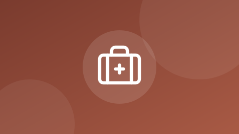
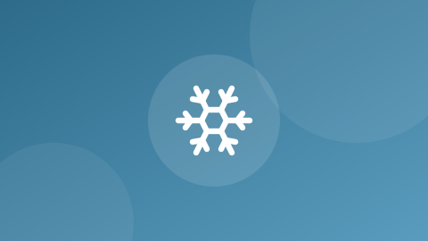
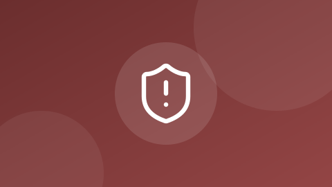

Kit d'urgence 72 h : tous nos guides
Se préparer chez soi, d'après le guide officiel « Tous responsables » : par où commencer, quoi adapter à votre foyer, et que faire selon chaque risque. Chaque guide est court, sourcé et gratuit.
Informations pratiques, sources officielles (guide « Tous responsables » (SGDSN, 2025) et sites officiels). Elles ne remplacent pas les consignes des autorités. En cas d'urgence, appelez le 112 et suivez les consignes de la préfecture, de la radio et de FR-Alert.
Les bases du kit
L'eau, les repas sans cuisson, la liste à cocher, le sac à emporter et un kit à petit prix.
 Kit de survie 72 h : la listeListe complète du kit d’urgence 72h du gouvernement : eau, nourriture, radio, trousse… Version claire + checklist interactive gratuite adaptée à votre foyer.Checklist à imprimerImprimez la checklist du kit d’urgence 72h tirée du guide officiel. Version simple à cocher + checklist interactive adaptée à votre famille. Gratuit.
Kit de survie 72 h : la listeListe complète du kit d’urgence 72h du gouvernement : eau, nourriture, radio, trousse… Version claire + checklist interactive gratuite adaptée à votre foyer.Checklist à imprimerImprimez la checklist du kit d’urgence 72h tirée du guide officiel. Version simple à cocher + checklist interactive adaptée à votre famille. Gratuit. Que mettre dans un kit d'urgenceQue mettre dans un kit d’urgence pour tenir 72 heures : eau, nourriture, lumière, radio, soins, papiers. Liste claire tirée du guide officiel + checklist gratuite.Combien d'eau stockerLe guide officiel demande 6 litres d'eau par personne pour 72 heures, soit 2 litres par jour. Tableau par taille de foyer, stockage et renouvellement.
Que mettre dans un kit d'urgenceQue mettre dans un kit d’urgence pour tenir 72 heures : eau, nourriture, lumière, radio, soins, papiers. Liste claire tirée du guide officiel + checklist gratuite.Combien d'eau stockerLe guide officiel demande 6 litres d'eau par personne pour 72 heures, soit 2 litres par jour. Tableau par taille de foyer, stockage et renouvellement. Aliments sans cuissonQue manger pendant 3 jours sans électricité ni gaz ? Liste d'aliments sans cuisson ni frigo pour le kit 72h, conseils de stockage et pièges à éviter.
Aliments sans cuissonQue manger pendant 3 jours sans électricité ni gaz ? Liste d'aliments sans cuisson ni frigo pour le kit 72h, conseils de stockage et pièges à éviter.
Le sac de secoursQue mettre dans un sac de secours / sac d’évacuation 72h. Liste officielle claire, sans achats inutiles. Différence avec le kit d’urgence expliquée.Un kit pas cherComment constituer un vrai kit d’urgence 72h à moindre coût avec ce que vous avez déjà. Liste officielle + ce qu’il faut vraiment acheter. Sans gaspillage.Le guide officiel et l'alerte
Ce que demande le guide « Tous responsables », où le télécharger, et comment réagir à FR-Alert.
 Le guide officiel en PDFOù télécharger le PDF officiel du guide « Tous responsables » (kit d'urgence 72h), ce qu'il contient, et une checklist gratuite à imprimer et cocher.Ce que dit le guide de l'ÉtatCe que recommande le guide « Tous responsables » (SGDSN) pour le kit 72h. Priorités, quantités exactes et checklist gratuite. Pas de kit officiel à acheter.Le guide résuméRésumé du guide « Tous responsables » publié par le Gouvernement : se préparer, connaître les risques, réagir à l’alerte, s’entraider. L’essentiel en 5 minutes.Alerte FR-AlertMessage FR-Alert reçu ? Ce que signifie l'alerte, pourquoi elle sonne même en silencieux, les bons réflexes et pourquoi ne pas la désactiver.Questions pratiquesPlus de réseau, toilettes sèches avec un seau, chauffe-eau comme réserve d'eau, talkies, rangement : réponses claires et visuels à partager.
Le guide officiel en PDFOù télécharger le PDF officiel du guide « Tous responsables » (kit d'urgence 72h), ce qu'il contient, et une checklist gratuite à imprimer et cocher.Ce que dit le guide de l'ÉtatCe que recommande le guide « Tous responsables » (SGDSN) pour le kit 72h. Priorités, quantités exactes et checklist gratuite. Pas de kit officiel à acheter.Le guide résuméRésumé du guide « Tous responsables » publié par le Gouvernement : se préparer, connaître les risques, réagir à l’alerte, s’entraider. L’essentiel en 5 minutes.Alerte FR-AlertMessage FR-Alert reçu ? Ce que signifie l'alerte, pourquoi elle sonne même en silencieux, les bons réflexes et pourquoi ne pas la désactiver.Questions pratiquesPlus de réseau, toilettes sèches avec un seau, chauffe-eau comme réserve d'eau, talkies, rangement : réponses claires et visuels à partager.Selon votre foyer
Adapter le kit à votre famille, à un bébé, à vos animaux et à votre logement.
 Entraide entre voisinsComment créer un réseau d’entraide de voisinage avant une crise. Ce que recommande le guide « Tous responsables » + outils concrets pour s’organiser.
Entraide entre voisinsComment créer un réseau d’entraide de voisinage avant une crise. Ce que recommande le guide « Tous responsables » + outils concrets pour s’organiser.Selon les risques
Les bons réflexes pour chaque situation, et ce que cela change dans votre kit. Pour les risques de votre commune : georisques.gouv.fr.
 CaniculeRéflexes anti-canicule : hydratation, logement frais, personnes vulnérables. Différence pic de chaleur / canicule + préparation du kit d’urgence.
CaniculeRéflexes anti-canicule : hydratation, logement frais, personnes vulnérables. Différence pic de chaleur / canicule + préparation du kit d’urgence.
Vague de froidGrand froid ou vague de froid : comment se protéger, garder son logement chaud sans danger, aider les personnes fragiles. Consignes officielles et kit d’urgence 72h.ConfinementAlerte, sirène ou accident industriel : comment se confiner et se mettre à l’abri chez soi ? Les bons réflexes officiels, quoi préparer, combien de temps tenir. Guide simple.
Attaque terroristeQue faire en cas d’attaque terroriste ? La consigne officielle : s’échapper, se cacher, alerter. Les bons gestes expliqués simplement, pour protéger sa vie et celle des autres.CyberattaquePiratage, rançongiciel, panne géante d’internet : que faire en cas de cyberattaque ? Les réflexes à adopter, qui contacter (17Cyber, Cybermalveillance), comment s’y préparer.Tensions internationalesGuerre, tensions internationales : comment se préparer calmement, comme le recommande le guide « Tous responsables » ? Kit 72h, informations fiables, entraide. Sans alarmisme.Catastrophe naturelleInondation, tempête, séisme, feu de forêt, canicule : connaître le risque près de chez vous, préparer son kit 72h et savoir réagir à l’alerte. Guide simple et gratuit.Le matériel, poste par poste
Radio, recharge du téléphone, frigo et congélateur pendant une coupure.
 Frigo et congélateurFrigo fermé : environ 4 h. Congélateur plein : environ 48 h, à moitié plein : 24 h. Les bons gestes pendant la coupure et quoi jeter ensuite.
Frigo et congélateurFrigo fermé : environ 4 h. Congélateur plein : environ 48 h, à moitié plein : 24 h. Les bons gestes pendant la coupure et quoi jeter ensuite.Questions fréquentes
Par où commencer pour préparer son kit d'urgence ?
Commencez par l'eau (6 litres par personne), puis la nourriture sans cuisson, la radio à piles, la lampe et les médicaments. La checklist permet de cocher au fur et à mesure.
Ces guides sont-ils officiels ?
Non. Tous prêts est une initiative citoyenne indépendante qui s'appuie sur le guide officiel « Tous responsables » et cite ses sources. Les consignes des autorités font toujours foi.
Les guides fonctionnent-ils hors ligne ?
Oui, une fois l'appli ouverte, les pages consultées restent disponibles sans connexion.
À lire aussi
Kit de survie 72 h : la listeListe complète du kit d’urgence 72h du gouvernement : eau, nourriture, radio, trousse… Version claire + checklist interactive gratuite adaptée à votre foyer.Checklist à imprimerImprimez la checklist du kit d’urgence 72h tirée du guide officiel. Version simple à cocher + checklist interactive adaptée à votre famille. Gratuit.Questions pratiquesPlus de réseau, toilettes sèches avec un seau, chauffe-eau comme réserve d'eau, talkies, rangement : réponses claires et visuels à partager.